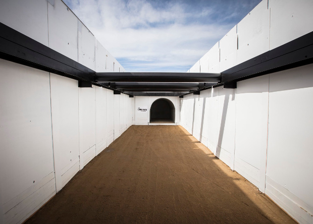

Сегодня мы, пожалуй, отвлечёмся от
скучных
теорий
и практик майнинга, чтобы поговорить
о приятном.
Из последних хороших новостей отметим,
сегодня
биткоин опять подорожал и стал стоить аж
6100 американских
долларов. Радости майнеров в последнее
время
нет предела, ведь менее месяца назад
биткоин
только
преодолел планку в 5000 долларов,
несказанно
порадовав
фанатов этой замечательной крипто
валюты.
Утром курс биткоина скакнул до 6159 долларов,
но потом
немного
«успокоился» и откатился до 6100 дол
ларов,
— сообщает
Coinmarketcap.
Growth chart
Показатель капитализации
биткоина
на
данный момент составляет около 101 мил
лиарда.
Прошлый скачок биткоина позволил ему
обогнать
по капитализации
Goldman Sachs. Ждём, когда это случится и с амери
канским
финансовым
холдингом JPMorgan Chase, чья капитализация
колеблется
в районе 350 миллиардов. Джеймс Даймон, ге
неральный
директор JPMorgan Chase, всегда относился
к криптовалюте
скептически, но, похоже, успехи битко
ина
вскоре
поумерят его пыл.
Биткоин продолжает демонстрировать
впечатляющие
результаты, а ведь ему всего лишь чуть больше
восьми
лет от роду.
Искусственный интеллект AlphaGo стал
полностью
самообучаемым
Программа AlphaGo знаменита тем, что первой
обыграла
профессионального
игрока в го без гандикапа на стандартной
доске
19 х
19.
И победа эта является очень значимым
прорывом
в
области
искусственного интеллекта, ведь
большинство
специалистов
в данной области считали, что событие
это произойдёт
не ранее 2020-2025 года. AlphaGo обучали при
помощи
общих
принципов машинного обучения и
элементарной
теории игры в го. Но с недавних пор
искусственный
интеллект
научился обходиться без какой-либо
помощи
со
стороны
людей и дальше развивается полностью
самостоятельно.
Обновлённая версия AlphaGo является
ещё одним
важным
шагом в будущее машинного обучения
и искусственного
интеллекта. Как в шутку отмечает журнал
Nature, подобный
переход ещё сильнее приближает нас к
«восстанию
машин»,
которые обретут суперспособности
без
какой-либо
помощи со стороны людей. Новая версия
искусственного
интеллекта была названа
разработчиками
AlphaGo Zero. И чтобы обучиться правилам игры
в го с
нуля,
ей
потребовалось всего несколько
дней.
При этом искусственный интеллект придумал
свои
собственные
уникальные шаги, позволяющие ему с
лёгкостью
обыгрывать
профессиональных игроков в го. На это
даже
у многих
признанных мастеров уходят годы. У AlphaGo
Zero на
это ушло
три
дня. Чтобы проверить новый ИИ в деле, его
заставили
играть
в го с предыдущей версией программы
AplhaGo. Как и
предполагали
разработчики, AlphaGo Zero одержал победу
со
счётом
100:0. В отличие от предыдущих версий, AlphaGo
Zero больше
ну
ограничивает
себя исключительно челове
ческими
знаниями,
а выходит за их рамки. Именно в этом и за
ключается
важность
этого момента в истории развития
искусственного
интеллекта.
Tech news
Илону Маску разрешили прорыть второй
тоннель

Тестовый тоннель, начинающийся на парковке SpaceX
Штат Мериленд разрешил компании The Boring
Company,
основанной
Илоном Маском, прорыть тоннель рядом с шоссе
между
Балтимором
и Вашингтоном, сообщает TechCrunch. Это будет
второй
тоннель
компании, который планируется
приспособить
для транспортной системы Hyperloop.
В прошлом году Илон Маск заявил о намерении
заняться
прокладкой
тоннелей и анонсировал создание The
Boring
Company. В феврале
2017 года компания начала копать тестовую
яму размерами
15×9×4,6 метров на территории SpaceX в Хоторне,
тогда
же
Маск
рассказал о своем видении целей проекта:
строительство
сети многоуровневых тоннелей, по
которым
будут
передвигаться автомобили и
скоростные
поезда.
Позднее предприниматель показал
концепцию
транспортных
тоннелей для автомобилей.
Весной 2017 года The Boring Company приобрела
тоннелепроходческую
машину (которую назвали Godot) и
доставила
ее
во
владения SpaceX. В мае Маск заявил, что первый тоннель
пройдет
из
Лос-Анджелеса в его пригород Калвер Сити,
а затем
в
другие
пригороды — Санта-Монику, Вествуд,
Шерман
Оукс. В
июле
предприниматель сообщил в твиттере,
что
тоннелепроходческая
машина завершила проходку первого
участка
в
Лос-Анджелесе, а в августе стало
известно,
что компания
получила разрешение от властей
города
Хоторн
(Калифорния) на прокладку тестового
трехкилометрового
тоннеля.
Также в августе 2017 года стало известно
о получении
Маском «устного одобрения» на
строительство
между
Нью-Йорком и Вашингтоном.Теперь власти штата
Мериленд
официально разрешили The Boring Company
строительство
участка тоннеля длиной в 16,5 километров
под
шоссе
Балтимор-Вашингтон
Парквэй. В перспективе этот участок потом
может
быть продлен
до Филадельфии и Нью-Йорка — предпо
лагается,
что
этот тоннель будет использоваться для
вакуумных
поездов
Hyperloop.
Можно предположить, что для рытья тоннеля
в Мериленде
The Boring Company будет использовать недавно
купленный
второй тоннелепроходческий комплекс.
О почти
полной
готовности комплекса недавно
рассказал
в твиттере
Илон Маск, машина получила имя Line-Storm (в
честь поэмы
Роберта
Фроста).
Microsoft записала в ДНК песню Deep
Purple
О применении ДНК в качестве носителя
информации
говорят уже давно. Есть даже достаточно
успешные
разработки
в этой сфере.
И похоже, что за этой технологией
действительно
может
оказаться будущее, так как недавно группа
ученых
Microsoft Research совместно с коллегами из
Twist
Bioscience и Вашингтонского
университета установила новый рекорд
в записи,
хранении и расшифровки информации
из нитей
ДНК.
Ученые смогли закодировать в ДНК
композиции
Tutu
джаз-исполнителя Майлса Дэвиса и
Smoke on the
Water
рок-группы
Deep Purple в живом исполнении, после чего
воспроизвели
их со стопроцентной точностью.
«Кодирование происходит путём
перевода
информации
из привычного двоичного кода
(нули
и единицы)
в структурный код ДНК (в вид четырех азотистых
оснований,
из которых состоит ДНК). При считывании
производится
обратное перекодирование
в двоичный
код.
При
этом сам физический ДНК-носитель размером
меньше
песчинки»
Как подчёркивают учёные, в отличие от
прочих
носителей
информации, ДНК способна безопасно
хранить
информацию
тысячелетиями, тогда как обычные
копии
приходится
менять каждые 10 лет.
«Помимо долговечности, ДНК
обладает
невероятной
вместительностью. В объёме ДНК размером
с
кончик
карандаша
может храниться около 10 терабайт
данных,
что
эквивалентно
памяти 600 стандартных смартфонов,
а вся цифровая
информация
мира сможет поместиться примерно
в девяти
литрах
этого биологического
материала».
Специалисты уверены, что их открытие
позволит
сохранить все важные сведения для
человечества
в целости
практически вечно. А имеющаяся
запись
уже сейчас
станет частью архива ЮНЕСКО «Память мира».